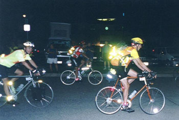
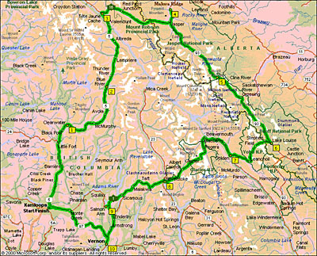
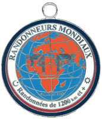

Volume 7 Issue 4 - July/August 2002
In This Issue
Current 2002 Brevet Schedule
200 km Brevet Results
Jan Heine: A pleasant ride - SIR Summer/Fall 200 km Brevet
300 km Brevet Results
Planning Ahead for PBP
Jon Muellner: RM1200 km Ride Report
Can Am Challenge 2002
Road Snippets
SIR Email List
For those of you on-line, join in the SIR email list! It's a great way to share info, ride schedules, car-pooling to events and training with other SIR members. To get on go to http://www.phred.org/mailman/listinfo/sir. It's easy!
SIR Volunteers Needed
SIR members wishing to help out on any of the brevets, please contact the organizer directly and offer your support. Running a double series this year will be easier if we all pitch in!
SIR Brevets
The Summer/Fall Brevet Series started in August 3 with the 200 km. We've had spectacular turnouts for all brevets and PBP is coming next year so now's the time to get ready! We also have the 1000 km coming up Sept. 14-17.
SIR Members only: SIR roster available upon request. If you would like a copy of the roster sent to you, please contact Anne Marie McSweeney at membership2004@seattlerandonneur.org or 425-868-6796.
| Sept 14-15 | 400 km | Mark Thomas | Some variation on Ron Lee's 400 km route to Sumas and Birch Bay, with the North Cascades 600 km tacked on to make the 1000 km route. |
| Sept 14-17 | 1000 km | Mark Thomas | See 400 km route above. |
| Sept 21 | 100 km Populaire | Kent Peterson | Repeat of last year's climbfest. |
| Oct 6 | 600 km | Still need volunteers! Contact Mark Thomas. | Olympic Peninsula route from 1999. |
|
|
|
SIR Summer/Fall 200 km Brevet
By Jan Heine
After a month of not much riding due to an inflamed tendon, I was happy to be at the start of the 200 km brevet. Even getting up early wasn't as difficult as usual. With more than two dozen randonneurs, the ferry ride to Bremerton was fun and entertaining. As the ferry entered the port of Bremerton, night had given to an overcast twilight. The grey sky matched the huge grey battleships of the shipyard and the grey buildings of the town. After a few words by organizer Terry Z, we were off, immediately climbing the first hill. Used as a good warmup by most, the route then briefly followed the Highway 3 before turning off onto the old Belfair Highway. Devoid of traffic, this is a most lovely road, gently winding its way into the hills. We passed under a railroad bridge and emerged into a gently undulating valley. By now, I found myself riding with a new member at the front. We chatted about randonneuring, bikes and soon reached Belfair. As we turned onto Highway 3 again, we noticed a group of three riders behind and slowed until they caught up.Thanks to our early start, this highway, too, didn't have much traffic. In any case, we soon turned off and rode along a wide valley full of beautiful meadows. The river valley widened and in the distance, we could see the Hood Canal - a glacial valley that was flooded when sea level rose at the end of the last ice age, 10,000 years ago.
Soon we reached the first control at Potlatch State Park. A quick loop around the park did not turn up any evidence of Terry - he had predicted at the start that his van might not be able to keep up with speedy randonneurs! We continued and stopped at the next shop to get our cards signed. Since this was closed, we simply signed each other's cards. The roads had been very flat until now, but from here to the turnaround point, there were short, but reasonably steep hills. The views of the water, the steep cliffs on the other side and the Olympic Mountains above were wonderful. The sky was still overcast, but not gloomy - a perfect day for a ride. Tailwinds sped us along.
Unfortunately, the riding styles of our group didn't match very well, resulting in frequent small variations in speed. Instead of enjoying the scenery, I found myself watching the wheel in front... Soon after reaching the hills, our group split up, some preferred to climb at a slower pace. After a morning on flat roads, I enjoyed the hills. Because of my inflamed tendon, I had to be careful not to overdo it. I spun up each hill, shifting gears until I reached the top. This helped, and after some enjoyable riding, I reached the turnaround in Brinnon. After buying some juice and having my card signed, I was back on the road before the second rider pulled in. On the way back, I saw all the other riders coming the other way. It was fun waving at them, even if it meant waving 33 times in 5 or 6 miles. The flat course had kept people close together, and it was nice to see them all in good spirits.
Traffic was picking up on the way back, but never got really bothersome - the early start definetely was a good idea. The control at Potlatch State Park now was manned by Terry, who offered water, juice and food. We chatted a bit about his recent ride in RAAM before I went on my way. The winds which had blown us to the turnaround now were increasing in strength, but fortunately, the road soon turned. Now a gentle tailwind helped progress. Soon I was back on the Old Belfair Highway. Since there was no sign indicating the street name, I stopped at a gas station to confirm I was on the right road. Now Bremerton was not far, and at 1:41 I reached the ferry terminal, after 7:26 hours for the 215 km. To my surprise, I couldn't find the control, nor the car mentioned in the route sheet. I rode around the block and up and down the street, but didn't find anything. No problem, I had my card signed at a burrito place that also provided lunch. Only after coming home, I found the phone number of the person at the control as I removed my route sheet from the cover of my handlebar bag. To make it fit, I had folded it so the "unimportant" details didn't show... It appears the control was set up a block or two off course by accident. No matter, it was a great ride, a wonderful route despite the lack of real hills, and altogether a successful day.
| SIR 2002 300 km Results - August 24, 2002 | ||||||||||||||||||||||||||||||||||||||||||||||||||||||||||||
|
|
|
||||||||||||||||||||||||||||||||||||||||||||||||||||||||||
From the RUSA web site
- Distance: 1200k (750 miles)
- Time Limit: 90 hours
- Rider Checkin: August 17, 2003
- Bike Inspection: August 17, 2003
- Start Date: August 18, 2003
- Finish Date: August 22, 2003
- Award Ceremony: August 22, 2003
- Start Times:
- Monday August 18 8:00pm - 80 hour group
- Monday August 18 10:00pm - 90 hour group
- Tuesday August 19 5:00am - 84 hour group
- Qualification Criteria: To enter PBP 2003, the rider must complete one full Brevet series (200k, 300k, 400k, and 600k brevets) in the same year as PBP.
- Brevets done the year before will not count toward PBP qualification. The brevets should be ridden in sequence between March 1 and June 15, 2003. Per ACP mandate, the rider must have a RUSA membership number beginning with the 200k.
- Entry Form: The official PBP 2003 entry form will be sent to all RUSA members in May of 2003.
- Entry Policy: Entry forms are accepted from Randonneurs Mondiaux member organizations only.
- The ACP will not accept individual entries. Per ACP mandate, all USA entrants must be members of Randonneurs USA and submit their entry via RUSA. RUSA members can enter PBP by sending the PBP entry form, payment and all other required documents to RUSA before July 1. RUSA collects and collates the forms, ensures they are correct, puts them in alphabetical order, sorts them into categories by start time and sends the forms to the ACP in France along with one large payment in Euros. Riders receive their PBP registration packet of information directly from the ACP around August 1.
- Entry Period: Entry forms are accepted between June 1 and July 1, 2003. No early entries are accepted. No late entries are accepted.
- Field Limit: 3,500 riders
- Documents Required:
- Completed PBP entry form including Brevet certification numbers
- Four self-adhesive self-addressed mailing address labels
- Letter from physician - stating that rider is in good health
- 2 Passport-size photos of rider
- Proof of medical insurance
- Payment of entry fee: checks only; no credit cards
- Age Limit: riders must be 18 years of age or older
- Entry Fee: $125.00 (approx)
- Start/Finish Area: St. Quentin en Yvelines, (near Versailles) France
- Nearest Airport to start/finish area: Orly-Sud
- For further information: Order the RUSA PBP Yearbook. See the Souvenir Items link.
Note: All participants are required to make their own travel arrangements for PBP. RUSA is not a travel agency and does not handle air, hotel or rental car arrangements for riders. Contact a travel agent to make your reservations.
Rocky Mountain 1200 km Ride Report
By Jon Muellner
What a long strange trip it's been...
I had signed up for the Rocky Mountain 1200 in January, thinking I'd be fully fit and ready by the time July rolled around and ready to tackle the longest ride yet of my very brief randonneuring life. How things change...here's a picture below of Greg and I at the start taken by Kent.

In the early months of the year I spent all my time on a fixed gear, readying myself for the Fleche around Easter. A flurry of work and family commitments took their toll on training and I just had to make do with limited mileage, which mainly was a few short rides and the brevets. This was a moderately feasible training regimen, except that as the longer brevets came around I was battered with a sore Achilles and a bike I could not get to fit properly. The SIR 600 km put the hurt on me with saddle sores and a really painful tendon, but I knew I had five weeks to get my act together. I also made my way to Mike Colemen at Kingston Classic Cycles, who took the time to make some bike fitting measurements and helped solve the majority of my problems. I can't thank him enough!
Two weeks before the RM I started having doubts, but managed to do a 650 km ride to OR in 36 hours and that eased some of my worry about conditioning. I only rode another 75 km until the ride started on Wednesday July 24, so it would have to do. I spent hours figuring time and distance and being rather anal about planning the ride scenario. It gave me some measure of comfort though, and I just kept in mind the mantra of only thinking of the next control ahead.
I met up with Mark Thomas, Peter Norris and Greg Zaborac at the Edmonds ferry dock Tuesday morning and waited for Bill Dussler and Greg Cox to arrive for the ride up. I nervously chatted at them for the entire journey, pestering them with questions and trying to quell my doubt at being able to do this! Inside though I do know myself enough that when I decide to commit, I do everything to finish, so I knew I'd be OK.
When we got to Kamloops in the dry Thompson River valley of BC I felt better and got a room with Jim Wilson from Gainesville, FL. He was on a recumbent that he's only ridden 30 miles before after breaking his Festina. That choice eventually caused him to abandon at Tete Jaune Cache, but he was a really unflappable kind of guy. The others were in nearby rooms at the Thompson Inn and we spent the day getting ready, eating and talking. It was exciting to wait for the start at 10 p.m. Wednesday night, but it also was a long wait. By 6 p.m. Wed. I was ready to go and anxious to get underway. The weather was perfect and the moon full with a clear sky. The bike inspection went well and soon I was milling around with the other 90 hour starters. Kent Peterson was there and we chatted about his ride up from Issaquah in the searing heat of the Fraser Valley (which I am intimately familiar from my Alaska tour).
A few announcements about some road construction and such, and then we were off. The air was cooler, but I still was glad I'd changed from my wool SIR jersey to my light neon green jersey as a few minutes later I was more than warm enough. I let myself trail off the back and watched the string of tail lights snake along the roadway. I chatted with Charlene Burwood from Manitoba and saw Ron Himshoot on his 5th RM 1200! I figured that riding a sane pace now would save me a bit for the long haul, but after about 50 km I found the back of the peloton a bit too unnerving as the Italians all stopped to help a friend and some Canadians nearly plowed into them on the shoulder. The next good downhill I let it rip and moved ahead quite a distance. I like speed and the dark makes it more exciting anyway.
The first control (134 km/03:40 Thurs 07.25) was at a B&B in Clearwater and I had not gotten off my bike since the start. I grabbed a sandwich and some cookies and filled the bottles and was off in 10 minutes. I figured the less time I wasted early would come in handy later. The daylight came up around 4 a.m. and the roads were good. The next control (229 km/08:25 Thurs 07.25) was in Blue River. Here I met up with Mark and Greg and saw them on and off till the Tete Jaune Cache control (339 km/13:15 Thurs 07.25). It was blazing hot and we rode in with Greg and Bill who were in the 84 hour group and much faster then me! I ate some melon and filled the bottles for another stretch, though I forgot to have a cup of coffee for the caffeine I wished I had later on. After leaving the control I fell off the back again and just picked a good pace for getting to my sleep break at Jasper. Mark and I rode this section together and both of us were running really short of water and starting to feel the effects of dehydration. I felt pretty OK, but Mark looked a bit dry and I was worried about leaving him. He's generally ahead of me so I knew something wasn't quite up to par. I begged a partial water bottle from a French tourist and then we found a campground Mark had seen the sign for earlier. We hand pumped copious amounts of water and sat in the shade until the mosquitoes started dining. It was like manna from heaven.
We got into the Jasper control (443 km/18:57 Thurs 07.25) and I found the shower and food (barley soup and potatoes) perfect sources of energy. Mark and everyone else had a motel for the night, but rather than crash their party, I decided to spend the night there. I talked with Roger Holt and a few others and then to my nap spot and crashed for a couple hours. I was up by midnight and after some food and water, started the trek south on Highway 93 down the Icefields Parkway. I saw Greg C., Mark, Bill and Greg Z. leaving the motel, but knew they would catch me eventually, so I just kept going. The night was still and my mind was booming with thoughts and some hesitation at riding alone into the land of wild animals. I've spent countless days in the wilderness and have encountered numerous bears, elk and cougars, but I felt rather vulnerable for some reason. I saw an owl fly low over the road and as the daylight came on I saw two kingfishers. The road started tilting up a bit more and soon the lights of a tandem came by and said hello, so I knew I was creeping along. Bill and Greg C. eventually caught me and I rode with them awhile before they moved along to keep a more ambitious pace of a 70 hour finish. I appreciated them slowing down and riding with me for a bit, as it was getting boring listening to my head chattering to itself. Little did I know that this was to be how most of my journey would be. The view of the mountains was spectacular from nearly evvery direction, and I used them as an opportunity to stretch my neck every so often.
I had already acquired a bit of saddle trauma, as the roads increasingly suffered from frost heaves and cracks that relentlessly pounded my rear end and hands. As I got closer to the control the road went up and the philosophy of no drop bags started to wear on me as I carried front panniers with nearly 20 lbs of clothes and sleeping gear. That and not having quite low enough gears made the final climb to the Columbia Icefields Center a standing only affair. My left achilles was crying and now my right one started a similar chorus. Ouch! I finally made the top the main climb as the rain was just starting. I decided to just go for the decent but soon had to stop in the torrential downpour that ensued to pull on a jacket and wool gloves. I didn't mind the rain and actually enjoyed having some wild weather to wash away the heat of the previous day. The surrounding peaks were magnificent. Large hanging icefields, glaciers and glorious mountains.
I made the control (548 km/07:14 Fri 07.26) and slopped around the water filled parking lot till I finally found the control entrance. I hung my things out to dry a bit and headed for the restaurant for a hot breakfast which I shared with Greg Z., Roger and Robert. Ham and eggs and a few cups of coffee helped get me re-energized and then I met up with Kent too, who had started with the 84 hr. group. From that point on I kept contact off and on with Greg Z. and Kent, both strong riders, and they acted as a gauge on my progress. As we were about to leave, Greg Z. had a look at his rear hub which was puking grease. The wheel didn't wobble and it spun fine, so my only advice was to just ride it till it died, but I don't think that was much comfort to him...Kent and I both run Phil hubs and they are worth their money. We finally headed out about an hour later and started the quick climb and then a screaming downhill. This was one of those times I love being a "coastie". Unfortunately, Greg Z.'s bike started some crazy oscillating and he could barely stop it. It was an unknown ailment and he'd never had the problem before and didn't afterward either. Very odd. We stopped along the way and got some chocolate milk and water at Saskatchewan River Crossing.

This next stretch was my nemesis. After the downhill portion ended I started the long road and eventual climb to Bow Pass. My ass was killing me and my attitude was less then stellar to boot. All I wanted was to get through it. Greg and Kent were ahead and I was glad they didn't have to listen to my whining. Everything hurt, both achilles, both feet, hands and butt. The road surface was abysmal. And then the climbing started...had there been anywhere to stop, I might have, but there was none, so I just kept going. Slowly I made it up the hill and finally crested the top after being passed by most of the Danish riders and a few more folks too.
As I lay there massaging my legs and eating some snacks, one of the Danish riders, Vera, came up and asked if everything was OK. That was one of those moments that was really nice, someone who didn't know me but definitely knew what the ordeal was all about. After a few moments to gather my thoughts and have a snack I headed out before the mosquitoes ate too much of me.
My pace until this point had been pretty good and I was averaging about 21 kph, but I knew the last stretch had knocked that down and I reduced my aspirations for a sleep break in Revelstoke back to Golden instead. I stopped a number of times before the next control to adjust my shorts and try and get more comfortable, but had little luck. I rolled into the Lake Louise control (676 km/16:00 Fri 07.26) and had the satisfaction that from now on I was riding the farthest I ever had on one ride. Kent was heading out when I found the building, but Greg was still there, eating some good food and relaxing a bit. I joined him and ate some much needed pasta and downed some coffee. We rolled out and had our pictures taken by the official RM photographer before getting out on the highway toward Golden. That was to be my next big rest point and I was really looking forward to it.
We took a quick spin over Kicking Horse Pass and I was feeling much better. I broke off a completely perfect downhill so I could stop and read about the "spiral train" that traveled down in the canyon. I'm sure Greg was wondering what madness would cause that, but after I knew I wasn't going to make it to Revelstoke that night I thought it best to relax a bit and enjoy the ride. The road got a bit better and we made pretty good time. We arrived at the control (760 km/20:53 Fri 07.26) in Golden and sat down to a nice plate of hashbrowns and orange juice. I spoke to Manfred Kuchenmuller, who was one of the original RM1200 riders in 1996. and we had a good chat. He was really friendly and easy going, one of those people I liked right away. At this point I opted to take off my panniers and rack and have them hauled back to Kamloops as I wouldn't be needing them and I wanted the advantage of having a bike that weighed 20 lbs. less. I was weak, but at the time felt fully justified. I took an ice cold shower and bedded down for an hour, knowing that Kent and Greg wanted to be riding again by 01:00. I could have gotten more sleep but the shower and rack work took an hour. Even so, I felt good when we left and figured I could take a nap further down the road. I must have been slightly out of it when I awoke at midnight...as I strolled around getting my gear together I happened to walk into the bathroom and soon realized that I had my shorts on inside-out...fortunately they have dark chamois so I didn't garnish the "attention" I should have for such an oversight!
The night was clear and cool and we slowly made our way out of town and up toward Roger's Pass, the final big climb of the route. It was a long but easy climb, very steady in the moonlight. I had two pair of shorts on now, which gave me some measure of comfort for which I was grateful. The sun was just coming up and the peaks were awash in yellow light. The moon sat just above them and I thanked her for watching over me. I arrived at the peak and pulled into the store for a cup of coffee. The morning was cool and I felt dazed but refreshed. Now came the long downhill into Revelstoke. The temperature rose quickly and I had put on my new RM1200 jersey, hoping it wouldn't jinx me but it was all I had left to wear. The coffee was not sitting well and I spent a half hour convincing myself that I wasn't getting sick. Arriving in town I found my way to the building and propped my bike on against the hot wall in the sun. I walked inside the control (909 km/09:43 Sat 07.27) and found Kent asleep and Greg eating. I joined him and slurped a ton of water while I was there. It was if I couldn't get enough liquids. The two of them were heading out by 11:00, but I needed to rest. I took a wonderful hour's nap and then chatted with Foster Renwick, a friend of Greg's I had met earlier and also saw Danelle the ride organizer. I stopped at the store on the way out of town for a bottle of Coke and hit the road.
At this point I was starting to get anxious for the finish and knew I'd make it if I just kept a good pace up. The roads were more varied now and I made it into the Salmon Arm control (1012 km/18:11 Sat 07.27) with one thing in mind: NEOSPORIN. I had run out of Bag Balm and desperately needed some relief from the saddle pain. I loaded up on water and drank some Coke and skipped eating so I could get going. I saw Manfred Kuchenmuller and his tandem partner Gordon Wanner again and chatted. I had a stash of remaining energy bars and such, so I had enough to get to Vernon. It took going to 3 convenience stores before I found some Polysporin, but one application and I was like a new man! Pain relief. Vernon was a short hop away through some wonderful rolling terrain and cool farmlands. The sun was going down and I made it into the control (1087 km/20:56 Sat 07.27) just after dusk.
The control at Vernon was in a youth hostel, a very cool old house right in town and the residents were no doubt amused by all the activity. As with all the controls, the volunteers were right there asking what I wanted to eat and looking tired but cheerful. I've got to commend them on their unfailing enthusiasm, no matter what time of day or night. I was now feeling really good and had considered a rest there before the final leg, but soon another bunch of riders came in and I just decided that I would push myself through the night to Kamloops and arrive in the morning. It felt like a fitting way to end the ride anyway. I ate a cold tuna and rice wrap and took one for the road, then swallowed 4 Ibuprophen and my first Vivarin. I was glad to have avoided that for most of the trip, but it seemed like the right time.
As I rode out of the control I got some heckling from some posers and had to bite my tongue and not snap back. After this many miles I didn't want to have to gut some poor teenager and leave him lying on the street...I checked out some of town and soon I was out of the lights and off on a quiet country road where it was dark and peaceful. I felt really good and was ecstatic thinking about this entire adventure. I was very tired though, and no matter what I did, couldn't quite stay awake fully. I got some good scares as I would hear things in the brush near the road and on the climb on Highway 97 I went very slowly...slow enough to be snatched by whatever predator lay in wait...though I could do nothing about it so I just started signing Pete Townsend songs and kept rolling. Eventually I rolled into Falkland and enjoyed another can of Coke as I sat on the sidewalk and ate my cold tuna and rice wrap and then set my watch alarm for a quick 7 minute nap. An old metal sign creaked in the wind as I closed my eyes. Minutes later, I was up and riding again, ready to get back to Kamloops. The next stretch seemed to take forever and I was certain I should be riding north to Highway 1 when in fact, after checking the map, I was going nearly dead east. Oh well. My head was starting to play tricks and I started seeing strange mosaics of alien figures on the shoulder all adorned in Mayan designs and interlocked like an MC Escher drawing. It was very cool. Gotta love sleep deprivation.
I finally crested out near Highway 1 and started the final downhill into Kamloops. I got up to nearly 80 km and dropped into the valley and onto the main highway. The daylight was that really nice early morning sort, peaceful and calm. I kept wondering when I'd get to the exit for City Centre as it seemed to take an inordinate amount of time, but that was the same point that I realized that no matter what happened to the bike, I could walk from here and still make the time limit, so I wasn't too concerned.
I made it to the final control (1205 km/07:33 Sun 07.28) and headed into the Heritage House to get my card signed. Karen, one of the control workers I saw earlier was there and she said "How can you be so perky? You don't even look like you've been riding!". I actually did feel great and had for the last 22 hours and I was feeling all chatty and bubbly. I was done. My first thought was....beer! And damn if they didn't have one there. The perfect finish to a great ride.
Kent was there and he and I talked for an hour before I headed up to the motel for a nice shower and a nap before the party...when I got to the room Jim was off somewhere and I looked at myself in the mirror and thought hey, I made it! It really was an experience of mind over matter, 'cause lord knows it wasn't my training technique!
From the BMB web site
The following riders completed the Rocky Mountain 1200 km in British Columbia, Canada, July 24-28, 2002 and then completed the Boston-Montreal-Boston 1200 km August 22-25, 2002.
Congrats to Mark for being the one SIR member to have completed both events this year!
First Last Current Residence Country John Bates Burnaby, BC Canada Ken Bonner Victoria, BC Canada Robert Gray Leicester United Kingdom Danelle Laidlaw Burnaby, BC Canada John Lake Evanston IL USA Stig Lundgaard Skovlunde Denmark Nancy Pauw Banff, AB Canada Wim Pauw Banff, AB Canada Marc Pritchard Cattaraugus, NY USA Mark Thomas Redmond, WA USA Brian Wiedle Acton, MA USA Greg Zaborac Canton, IL USA
Kent Peterson's Fixed Gear Journey, WA to MN was completed on June 26th. He rode 2953.4 kilometers in 11.5 days. Average of 256.8 kilometers per day. His quote: "I took no pain killers and walked no hills." We hope to see a ride report soon!Terry Zmrhal and Tracy McKay finished their 2 Person Team RAAM in 8 days with a total time of 195:39:00 for 2991.9 miles! Congratulations!! Can't wait to hear about their experiences!
Mark Thomas, Anne Marie McSweeny, Jon Muellner, Bill Dussler, Terry Zmrhal, Greg Cox & Wayne Methner
Membership Fee:
$8.00 - full membership w/e-mail newsletter or
$15.00 - full membership w/printed newsletter.
Membership Address:
c/o Anne Marie McSweeny, 19167 NE 43rd Court
Sammamish, WA 98074, 425-868-6796